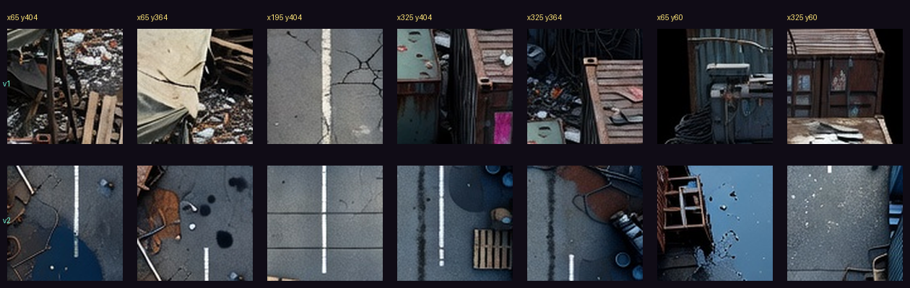
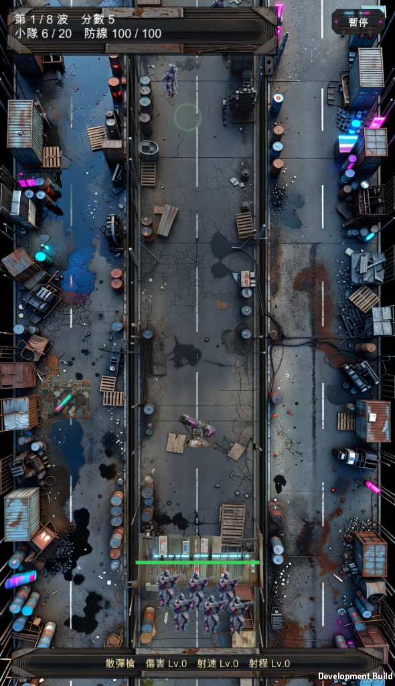
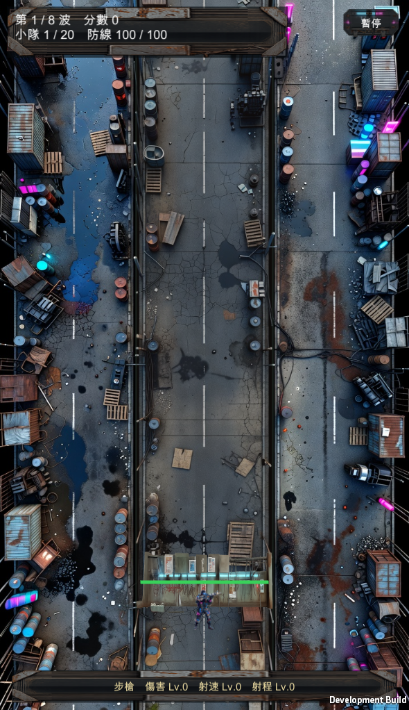
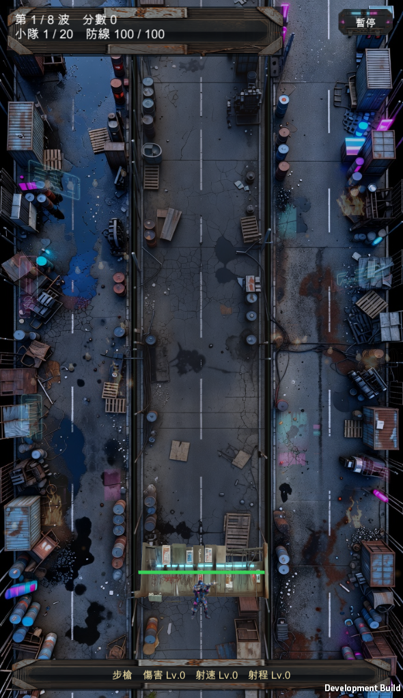
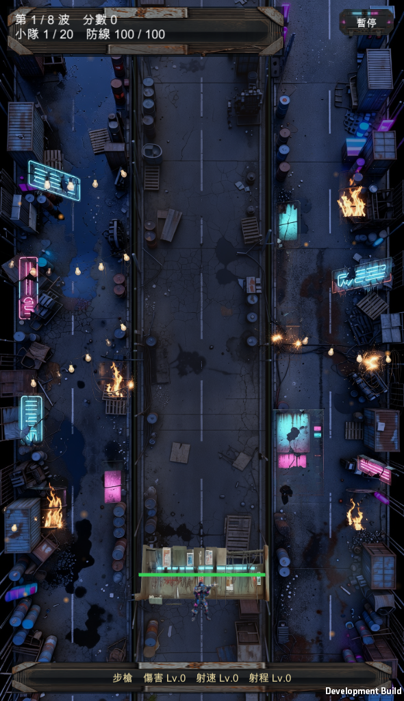
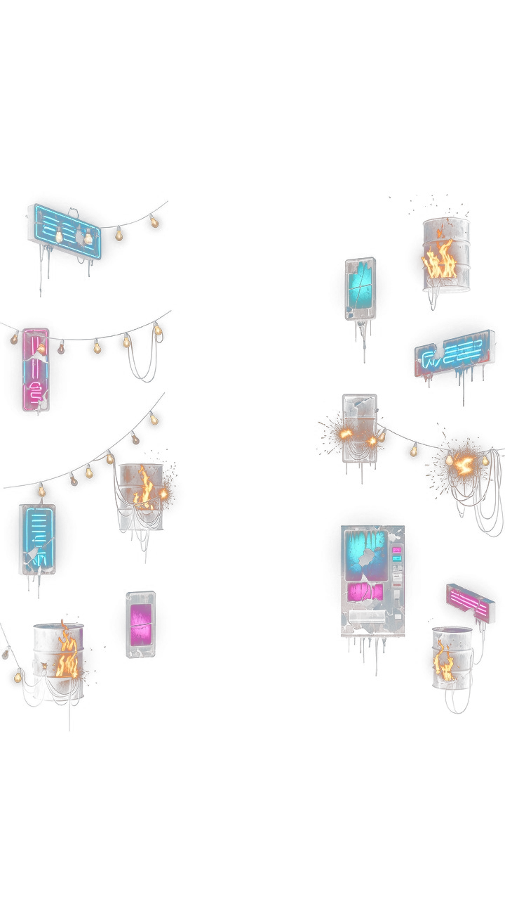
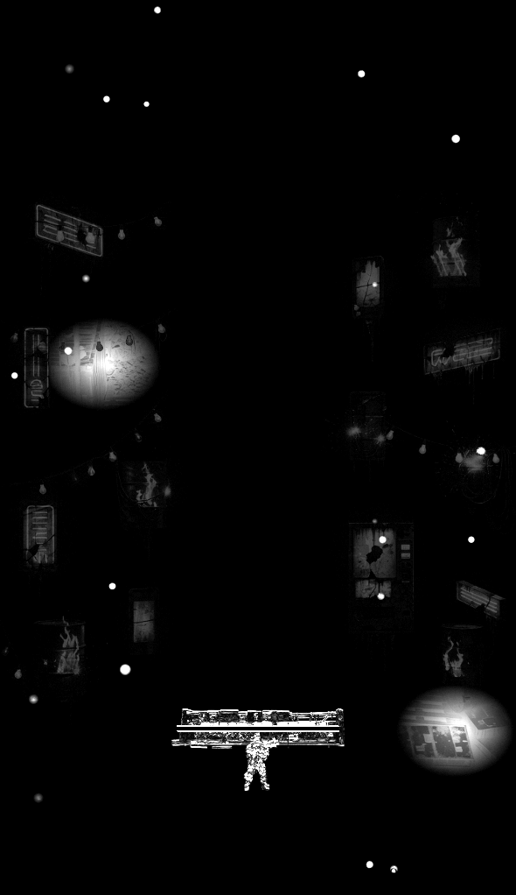

殭屍防禦 · 場景
正上方俯視的賽博龐克貧民窟街道，240 秒走完一輪日夜。日夜與粒子全部是程式做的。底圖已改版到 v2——見下方「補給箱腳下是什麼」。

使用者回報「補給箱像貼在別人家屋頂上」，我回覆「防線固定之後一併解決」。那是錯的——防線固定只解決了箱子會漂移，沒有解決箱子腳下是什麼。上面那張切片圖是實際量測的結果。
根因不只是箱子。這遊戲有三條車道、小隊可以站到任何一條，而 v1 的 prompt 寫「兩側＝補給區、可以很雜亂」，結果左右兩條整條被貨櫃鋪滿——槍手站過去一樣是站在貨櫃上。v2 改成要求三條同樣寬的通道全部是可走地面，雜物只能放在最外緣與通道之間，而且只能低矮。
過程中我寫了三種啟發式想自動判斷「腳下是不是高起物」，三種互相矛盾：亮度＋平坦度會把馬路誤判成貨櫃頂，彩度＋暖色抓不到灰綠色的貨櫃。最後放棄分類器，直接把兩版的同一批位置切出來並排看——像素本身就是答案。




240 秒一輪是連續漸變，兩張圖只能硬切，中間那段沒有東西可放。現在是同一張底圖乘上一條色溫曲線、發光層 alpha 反向淡入——任何一個時間點都有正確的畫面，而且調參數就能改，不用重生素材。跟 Boss 彈幕改用粒子拼貼是同一個原則：會變的東西交給程式。
曲線用 cos 而不是三角波：日落日出慢、正午與午夜停留久。線性的話整輪都在變色，玩家會覺得畫面一直在閃。


| 相位 | 夜度 | 底圖色 | 發光 alpha | 餘燼 | 探照燈 |
|---|---|---|---|---|---|
| 0.000 正午 | 0.000 | 1.00 1.00 1.00 | 0.000 | 0/22 | 0/2 |
| 0.125 | 0.147 | 0.91 0.92 0.95 | 0.000 | 0/22 | 0/2 |
| 0.250 | 0.500 | 0.71 0.74 0.84 | 0.259 | 22/22 | 2/2 |
| 0.375 | 0.854 | 0.50 0.56 0.73 | 0.870 | 22/22 | 2/2 |
| 0.500 午夜 | 1.000 | 0.42 0.48 0.68 | 0.953 | 22/22 | 2/2 |
| 0.625 | 0.853 | 0.51 0.56 0.73 | 0.875 | 22/22 | 2/2 |
| 0.750 | 0.500 | 0.71 0.74 0.84 | 0.261 | 22/22 | 2/2 |
| 0.875 | 0.146 | 0.92 0.92 0.95 | 0.000 | 0/22 | 0/2 |
| 1.000 回到正午 | 0.000 | 1.00 1.00 1.00 | 0.000 | 0/22 | 0/2 |
對稱、連續、前半段單調遞增。執行期例外 0。
有真背景時，車道染色降到 35%、分隔線降到 40%。原本的濃度是為了在純色底上做區分，疊在街道照片上會變成一條蓋住路面的色帶。但不能完全拿掉——「怪從中間那條來」是這款最重要的閱讀線索。
commit dbedd2c · 素材 $0.60（白天 v1／v2＋夜間發光層）· 日夜與粒子 $0